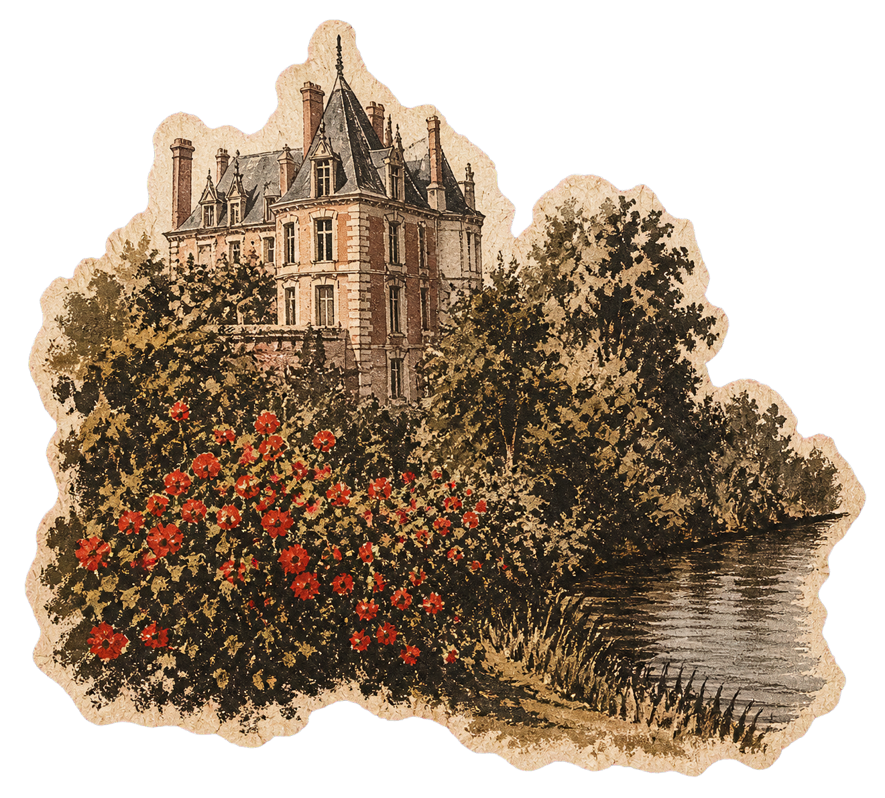
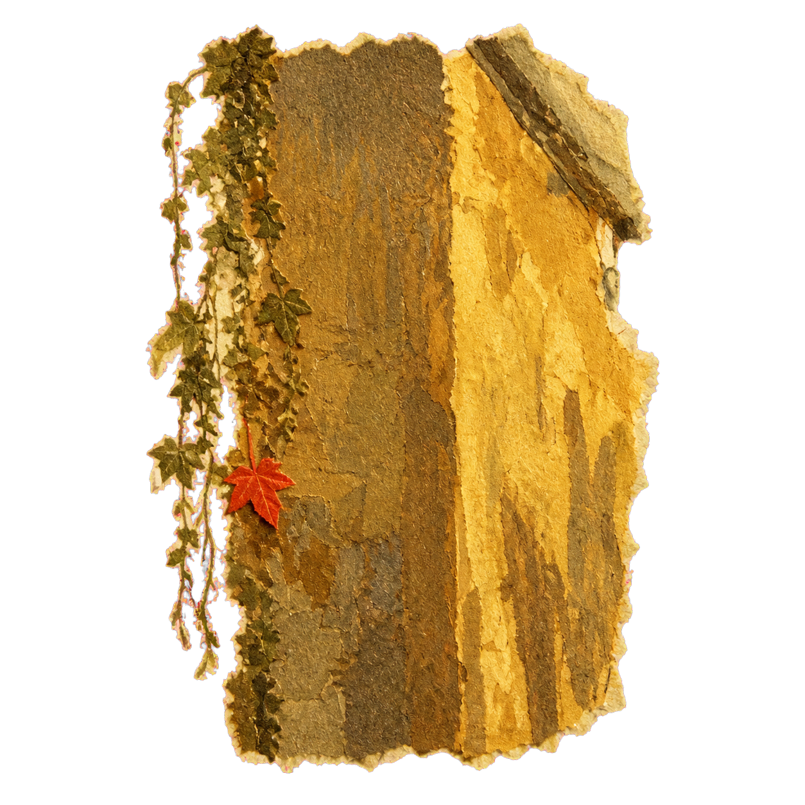
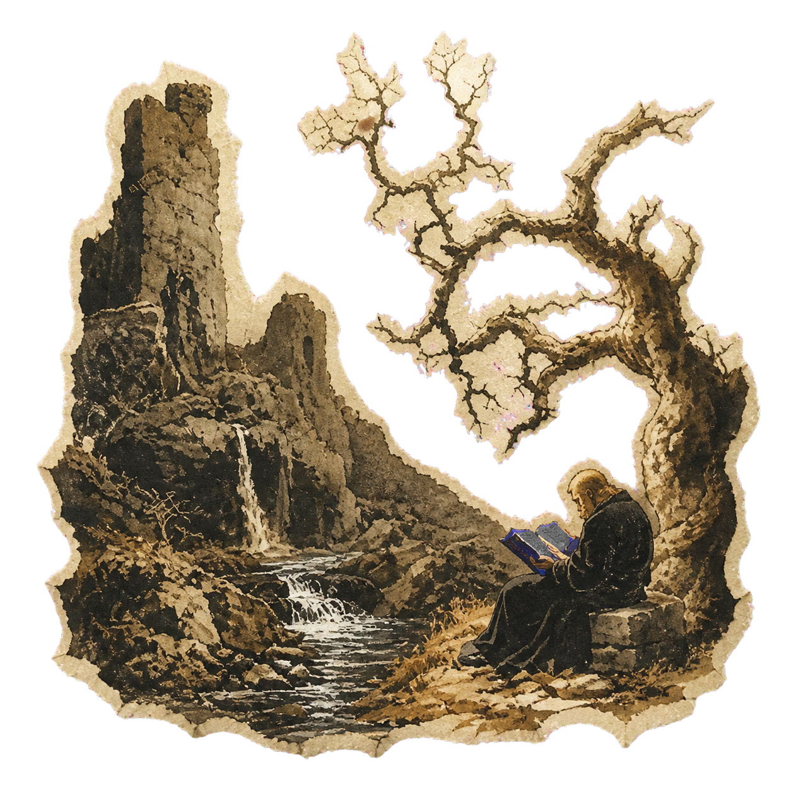
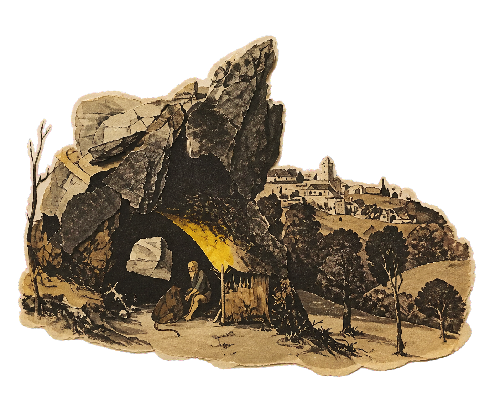

Data architecture
Clean, governed and historically consistent data is the foundation of every model we trust.
Systematic intelligence
We combine statistical learning, market microstructure and disciplined experimentation to identify relationships that endure beyond a single cycle.

Clean, governed and historically consistent data is the foundation of every model we trust.
Hypotheses are tested across regimes, costs and adversarial scenarios before capital is considered.
Risk is designed into the research process, not added after a strategy has been built.


“Observe long enough for the exception to reveal the rule.”
